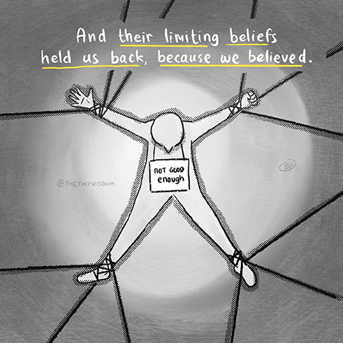

Your Past Does Not Dictate Your Future.
August 7, 2022.
This was originally posted on The Tiny Wisdom website.
Sometimes other people say that we are not good enough, making us feel like we'll never be good enough.
We listen to what people say about us at face value. And when they left, their limiting beliefs held us back because we believed.
These experiences happened when we were young and naïve, most of the time.
That is why we doubt ourselves to the point of believing that we can't improve ourselves even if we try.


Yet, we forgot that we've built the knowledge to break through those chains over the years. We made mistakes, but we learned.
Maybe back then, we couldn't, but we can do it now.
Because what's keeping us is not our lack of skills or experience. But the trauma that we got because somebody decided to say that we are not good enough.
Because we accept the idea that they projected to us, the idea that we will never be good enough.
So here's your sign to break the "chain" and move on.
Or slowly pry them open because it's not always easy to break those chains and let go. It's okay to take it slow and easy.
But remember this.
You are better than you were before.
Your future is not limited to what others tell you.
The Tiny Wisdom..